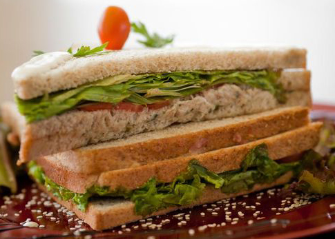

SANDUÍCHE NATURAL DE ATUM
PREPARO 15 MIN
RENDIMENTO 6 PORÇÕES
INGREDIENTES
- Pão de forma
- 2 latas de atum em conserva
- Maionese, o suficiente para virar uma pasta, 3 colheres de sopa aproximadamente
- 1 lata de milho
- 1/2 cebola picadinha
- Coentro ou cebolinha picada a gosto
- Alface em tirinhas
- Tomate em rodelas
- Repolho roxo cortado bem fininho
MODO DE PREPARO
- Coloque o atum em um prato e amasse bem até que fique todo moído
- Adicione a maionese aos poucos, 1 colher de cada vez, misturando para ver o ponto de pasta, não é legal exagerar na maionese para não ficar pesado
- Adicione a cebola picadinha, a cebolinha ou coentro picado, a lata de milho e misture bem
- Passe essa mistura de atum em uma fatia de pão de forma de modo proporcional em toda fatia
- Salpique o alface cortado em tirinhas e um pouquinho de repolho roxo por cima
- Coloque 1 rodela de tomate maduro e termine com outra fatia de pão de forma